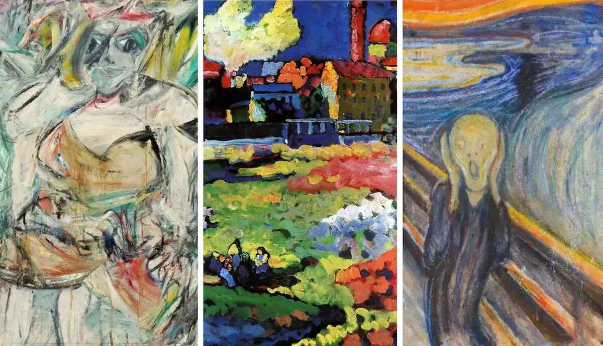
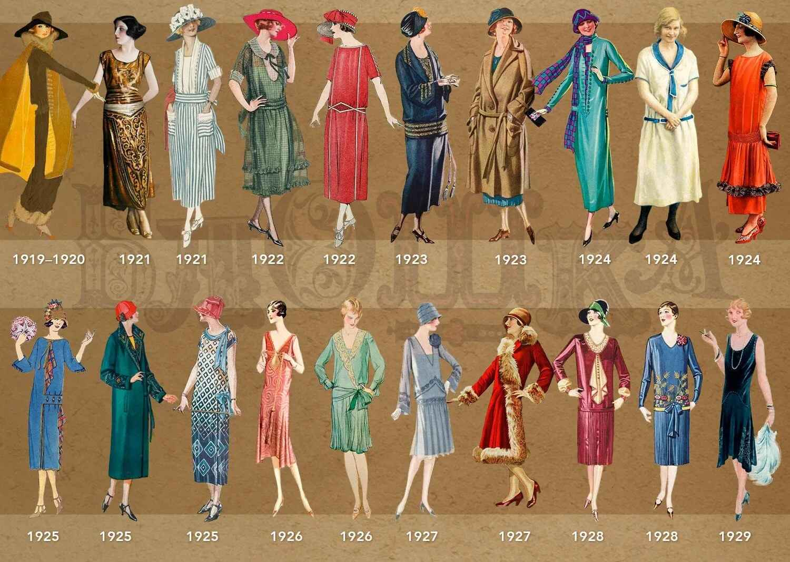
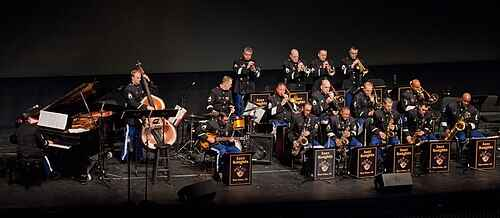

📜 History

Modernism emerged in the late 19th and early 20th centuries as a cultural movement that challenged traditional ways of thinking. Inspired by industrialization, urban growth, and World War I, it reflected the complexity and fragmentation of the modern world.
🎨 Culture
Modernist culture embraced experimentation and originality, influenced by psychoanalysis, philosophy, and scientific progress. Artists and writers used abstract forms, symbolism, and unconventional narratives.
👗 Fashion
Women’s fashion embraced shorter hemlines and loose silhouettes, while men favored relaxed tailored suits. Minimalist and geometric patterns echoed modernist design.
☕ Lifestyle
The modernist lifestyle thrived in urban spaces, cafés, and literary salons. Jazz clubs and cosmopolitan travel reflected the era’s vibrant energy.
🎷 Music
Jazz brought improvisation and rhythm to life, while composers like Stravinsky pushed classical boundaries. Radio and gramophone connected cultures worldwide.